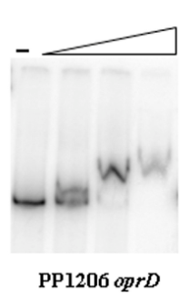

oprD (PP_1206) encodes a substrate-selective outer membrane porin of the OprD/Occ (TC 1.B.25) family in Pseudomonas putida KT2440. The protein is a monomeric beta-barrel channel located in the bacterial outer membrane that mediates the facilitated diffusion of small, charged solutes from the extracellular space into the periplasm. As the archetypal OccD-subfamily porin (the founding member historically named OprD/OccD1), it is associated with the uptake of basic amino acids (e.g., arginine, lysine) and related small molecules, contributing to nutrient scavenging across the low-permeability Pseudomonas outer membrane. In P. putida its expression is integrated into carbon/nitrogen status regulatory networks: transcription is induced under dual carbon-plus-nitrogen limitation, and the carbon-status response regulator CbrB binds the oprD promoter directly. Although annotated with an EC 3.4.21.- (serine peptidase) keyword inherited from the source EMBL record, there is no biochemical or structural support for a hydrolase/peptidase activity; the protein is a channel-forming porin, not an enzyme.
| GO Term | Evidence | Action | Reason |
|---|---|---|---|
|
GO:0015288
porin activity
|
IEA
GO_REF:0000120 |
ACCEPT |
Summary: Channel/porin activity is the well-supported molecular function for this protein. It belongs to the outer membrane porin (Opr, TC 1.B.25) family / OprD-Occ superfamily of substrate-selective beta-barrel channels, and the InterPro/PANTHER and Pfam (PF03573 OprD) signatures are diagnostic. Porin activity is the correct, appropriately general molecular function.
Reason: Family membership (OprD/Occ porin), Pfam PF03573, and the OprD-family literature establish that this is a channel-forming outer membrane porin. A more specific "wide pore channel activity" subtype is plausible but the parent porin activity term is well supported and is the core molecular function.
Supporting Evidence:
file:PSEPK/oprD/oprD-deep-research-asta.md
- **Protein Description:** SubName: Full=Basic-amino-acid specific porin OprD {ECO:0000313|EMBL:AAN66830.1}; EC=3.4.21.- {ECO:0000313|EMBL:AAN66830.1};
|
|
GO:0016020
membrane
|
IEA
GO_REF:0000002 |
MODIFY |
Summary: Localization to a membrane is correct but uninformatively general. OprD/Occ-family porins are integral outer membrane beta-barrel proteins; the protein carries a cleaved N-terminal signal peptide (residues 1-23) consistent with Sec-dependent export and outer membrane insertion. The annotation should be refined to the bacterial outer membrane.
Reason: The protein is an established OprD/Occ-family outer membrane porin; the generic "membrane" term under-specifies its known compartment. GO:0019867 (outer membrane) is the appropriate, evidence-consistent refinement.
Proposed replacements:
outer membrane
|
|
GO:0055085
transmembrane transport
|
IEA
GO_REF:0000108 |
ACCEPT |
Summary: As a porin, this protein mediates diffusion of small solutes across the outer membrane, so participation in transmembrane transport is the correct biological process. This is a reasonable, appropriately general process term inferred logically from the porin molecular function.
Reason: Porin activity entails movement of solutes across a membrane; transmembrane transport is the consistent and correct BP annotation. A more specific child (e.g., amino acid transmembrane transport) is plausible based on family-level substrate preference but is not directly demonstrated for PP_1206 itself, so the general term is retained.
|
Q: What is the precise substrate specificity of P. putida KT2440 OprD (PP_1206) - does it transport basic amino acids (arginine/lysine) and/or other small solutes, and with what selectivity, when assayed directly (e.g., single-channel electrophysiology or proteoliposome flux)?
Q: Does loss of PP_1206 produce a measurable growth or outer membrane permeability phenotype in P. putida, or is its function masked by redundancy within the large OprD/Occ porin repertoire of this organism?
Experiment: Construct a clean PP_1206 deletion mutant in P. putida KT2440 and assess growth on basic amino acids (arginine, lysine, histidine) as sole nitrogen/carbon source and outer membrane permeability, complementing in trans to confirm specificity.
Experiment: Purify OprD (PP_1206), reconstitute into planar lipid bilayers or proteoliposomes, and measure single-channel conductance and substrate-dependent flux/competition to define the channel's selectivity profile.
This report is retrieval-only and is generated directly from Asta results.
search_papers_by_relevance with snippet_search.The research report should be a detailed narrative explaining the function, biological processes, and localization of the gene product. Citations should be given for all claims.
You should prioritize authoritative reviews and primary scientific literature when conducting research. You can supplement
this with annotations you find in gene/protein databases, but these can be outdated or inaccurate.
We are specifically interested in the primary function of the gene - for enzymes, what reaction is catalyzed, and what is the substrate specificity? For transporters, what is the substrate? For structural proteins or adapters, what is the broader structural role? For signaling molecules, what is the role in the pathway.
We are interested in where in or outside the cell the gene product carries out its function.
We are also interested in the signaling or biochemical pathways in which the gene functions. We are less interested in broad pleiotropic effects, except where these elucidate the precise role.
Include evidence where possible. We are interested in both experimental evidence as well as inference from structure, evolution, or bioinformatic analysis. Precise studies should be prioritized over high-throughput, where available.
The requested target (UniProt Q88NK1) corresponds to oprD (PP_1206) in Pseudomonas putida KT2440/KT2442 and encodes an OprD-family outer membrane porin annotated as a “basic amino acid specific porin OprD.” This mapping is explicitly used in P. putida CbrB regulon work where PP1206 is listed as “oprD – basic amino acid specific porin OprD”. (barroso2018thecbrbregulon pages 4-6)
Because “oprD” is extensively discussed in P. aeruginosa (especially for carbapenem susceptibility), I treat P. aeruginosa evidence strictly as family-level mechanistic context (OccD/Occ) and not as organism-specific evidence for KT2440 unless explicitly shown to generalize. (eren2012substratespecificitywithin pages 1-2, chevalier2017structurefunctionand pages 1-2)
OprD is an outer membrane porin: a water-filled β-barrel channel that enables diffusion of certain small solutes across the Gram-negative outer membrane. In Pseudomonas, many outer membrane channels are substrate-selective rather than the wide, non-specific porins typical of Enterobacteriaceae, which makes specific porins important determinants of nutrient uptake and permeability. (eren2012substratespecificitywithin pages 1-2, chevalier2017structurefunctionand pages 1-2)
A key update in the field is that the historical “OprD family” has been reframed as Occ (Outer membrane carboxylate channels) because many transported substrates require a carboxyl group for efficient transport. (eren2012substratespecificitywithin pages 1-2)
The Occ family splits into two major subfamilies with distinct preferences:
- OccD members: linked to uptake of basic amino acids (positively charged amino acids). (chevalier2017structurefunctionand pages 1-2)
- OccK members: linked to uptake of negatively charged cyclic molecules and other carboxylate-containing compounds. (chevalier2017structurefunctionand pages 1-2)
Within this framework, the archetype OccD1 (historically OprD) is considered a channel for basic amino acids and is also implicated as an entry route for carbapenem β-lactam antibiotics in P. aeruginosa. (eren2012substratespecificitywithin pages 1-2, ude2021outermembranepermeability pages 1-2)
Occ/OprD-family channels are monomeric β-barrels with a constriction (“eyelet”) that is shaped by extracellular loops (notably L3 and L7) and barrel-wall residues. A conserved charged feature described for Occ channels is a “basic ladder” (arginine/lysine residues) at the constriction that contributes to electrostatic recognition and selectivity. (eren2012substratespecificitywithin pages 1-2, eren2012substratespecificitywithin pages 3-6)
Single-channel electrophysiology indicates dynamic gating/substates: for example, OccD1/OccD2 show very small dominant conductances (~15 pS), while another OccD member (OccD3) can show much larger conductance states (~700 pS), implying that static pore size alone does not fully explain function and that conformational dynamics likely contribute to transport. (eren2012substratespecificitywithin pages 3-6)
By family definition and by how it is treated in Pseudomonas porin literature, OprD/Occ channels are outer membrane proteins mediating diffusion across the outer membrane (with passage into the periplasm). (eren2012substratespecificitywithin pages 1-2, chevalier2017structurefunctionand pages 1-2)
In a controlled chemostat multi-omics study in P. putida KT2442, the porin family OprD (PP_1206) was reported as exclusively induced under dual (carbon+nitrogen) limitation, and the authors note that the “specific porin OprD has been shown to be implicated in the uptake of basic amino acids, facilitating their diffusion across the membrane.” (pobletecastro2012themetabolicresponse pages 8-9)
Interpretation: in P. putida, PP_1206 likely supports nutrient scavenging and outer membrane remodeling under nutrient limitation, especially when uptake of nitrogenous solutes (including amino acids) becomes advantageous.
A key P. putida-specific regulatory result is that CbrB (a σ\N-dependent transcriptional activator in the CbrAB system) binds directly to the PP1206 (oprD) promoter:
- The study detected an EMSA mobility shift for the PP1206 promoter fragment as CbrB concentration increased (0, 0.5, 1, 2 μM CbrB), supporting direct binding. (barroso2018thecbrbregulon pages 6-8, barroso2018thecbrbregulon media 0a54c73d)
- PP1206 appears among ChIP-seq targets with enrichment 3.45. (barroso2018thecbrbregulon pages 4-6, barroso2018thecbrbregulon pages 3-4)
- RT-qPCR validation reported fold change 0.3 (computed as KT2442 / ΔcbrB), with reported mRNA levels 1.71 ± 0.85 (WT) vs 5.77 ± 1.64 (ΔcbrB), i.e., higher transcript levels in the cbrB mutant in the tested condition. This indicates CbrB-mediated repression of oprD under those specific growth conditions (minimal medium with oxaloacetate, mid-exponential). (barroso2018thecbrbregulon pages 4-6, barroso2018thecbrbregulon media f1da5f95)
Taken together, PP_1206/oprD sits at the intersection of (i) nutrient limitation/transport remodeling in chemostats and (ii) global carbon status signaling via CbrAB/CbrB.
From the retrieved sources, I did not find direct KT2440 PP_1206-specific measurements of:
- purified-channel substrate flux (e.g., arginine or lysine diffusion rates) in P. putida
- genetic knockout phenotypes for PP_1206 alone (growth on defined basic amino acids, competitive fitness, permeability changes)
- antibiotic susceptibility consequences specifically attributable to PP_1206 in KT2440
Therefore, substrate specificity beyond “basic amino acid porin” remains primarily inferred from family knowledge and the P. putida omics/regulatory literature above.
Most 2023–2024 work is centered on P. aeruginosa (clinical relevance) rather than P. putida. These studies remain valuable to interpret OprD/OccD as a conserved porin family and to understand broader implications of modulating OprD-like porins.
Freed & Hanson (2024) investigated imipenem entry and AmpC induction in P. aeruginosa using 17 clinical isolates plus 3 laboratory strains (20 total). They report that all 20 isolates induced blaAmpC under sublethal imipenem exposure, and 18 lacked detectable OprD protein, supporting that imipenem can enter even without detectable OprD (alternative porins/paths exist). The study reports imipenem/relebactam non-susceptible MICs ranging 4–256 μg/mL. (jr2024ampcinductionby pages 1-2)
Relevance to P. putida annotation: this underscores that OprD-family porins can be part of a redundant permeability network, so single-gene loss may not always yield a clear phenotype—consistent with the broader concept that specific assays (radiolabeled substrates, proteoliposomes) may be needed to quantify transport. (tamber2010physiologicalcontributionof pages 99-103, eren2012substratespecificitywithin pages 3-6)
Wu et al. (2024) synthesize evidence that downregulation of influx porins (including OprD) and upregulation of efflux pumps are central inducible resistance mechanisms in P. aeruginosa, and discuss adjuvant strategies to modulate these systems. (wu2024antibioticinfluxand pages 1-2)
Relevance to P. putida: although KT2440 is not a pathogen, outer membrane permeability and selective porins can still constrain uptake of substrates/toxins; thus OprD-like porins are potential tuning points in strain engineering for bioprocess robustness.
In Pseudomonas pathogens, OprD/OccD porins are strongly tied to carbapenem permeability (especially in P. aeruginosa), and loss/downregulation is a canonical resistance mechanism; however, recent evidence emphasizes alternative entry routes and the need to consider combined mechanisms (β-lactamase induction, efflux). (ude2021outermembranepermeability pages 1-2, jr2024ampcinductionby pages 1-2, wu2024antibioticinfluxand pages 1-2)
While PP_1206 itself is not directly engineered in the retrieved KT2440 strain-engineering papers, multiple lines of evidence position outer membrane porins as an actionable layer in P. putida chassis design:
- In chemostat-grown P. putida KT2442, induction of OprD (PP_1206) under dual limitation suggests that porins participate in nutrient-limitation adaptation, which is directly relevant to high-density and nutrient-managed industrial processes. (pobletecastro2012themetabolicresponse pages 8-9)
- Independent P. putida bioprocess engineering work uses porin abundance as a manipulable parameter (e.g., OprF/OprE overexpression for controlled disruption), supporting the general principle that porin composition is a practical engineering knob in KT2440. (pobletecastro2020engineeringtheosmotic pages 1-2)
P. putida-specific quantitative regulatory and expression data
- CbrB ChIP-seq enrichment at PP1206 promoter: 3.45. (barroso2018thecbrbregulon pages 4-6)
- oprD RT-qPCR (WT vs ΔcbrB): fold change 0.3 (KT2442 / ΔcbrB), with absolute values 1.71 ± 0.85 (WT) vs 5.77 ± 1.64 (ΔcbrB) under minimal medium with oxaloacetate. (barroso2018thecbrbregulon pages 4-6, barroso2018thecbrbregulon media f1da5f95)
Family-level quantitative structural/biophysical data
- Single-channel conductance states: OccD1/OccD2 ~15 pS; OccD3 up to ~700 pS (dynamic states). (eren2012substratespecificitywithin pages 3-6)
2024 clinically motivated quantitative data (P. aeruginosa)
- Freed & Hanson (2024): 20 strains/isolates tested; 18/20 lacked detectable OprD protein; MICs for imipenem/relebactam non-susceptible isolates 4–256 μg/mL. (jr2024ampcinductionby pages 1-2)
Recommended primary functional statement (high confidence, P. putida-supported):
PP_1206/oprD encodes a substrate-selective outer membrane porin (OprD/OccD family) that is implicated in the uptake/diffusion of basic amino acids across the outer membrane and is transcriptionally integrated into nutrient/carbon status regulatory networks (CbrAB/CbrB), with condition-dependent expression (e.g., induction under dual nutrient limitation). (pobletecastro2012themetabolicresponse pages 8-9, barroso2018thecbrbregulon pages 4-6, barroso2018thecbrbregulon media 0a54c73d)
Recommended regulatory statement (high confidence, direct evidence):
CbrB binds the oprD (PP1206) promoter (EMSA) and modulates its expression; under oxaloacetate minimal medium, oprD transcript levels are higher in a ΔcbrB mutant than in WT (RT-qPCR fold change 0.3 WT/ΔcbrB), consistent with CbrB-mediated repression in that condition. (barroso2018thecbrbregulon pages 4-6, barroso2018thecbrbregulon media 0a54c73d, barroso2018thecbrbregulon media f1da5f95)
Recommended mechanistic inference (moderate confidence, family-based):
Given OccD-family architecture and selectivity principles, OprD likely uses a loop-defined constriction (L3/L7) and charged features (“basic ladder”) to recognize small substrates that carry a carboxylate and appropriate complementary charge distribution, consistent with transport of basic amino acids and related solutes. (eren2012substratespecificitywithin pages 1-2, eren2012substratespecificitywithin pages 3-6)
| Claim/Topic | Key details (include quantitative values) | Organism context | Evidence type | Primary source with publication year | URL/DOI | Citation ID |
|---|---|---|---|---|---|---|
| Gene identity of target oprD / PP_1206 | PP1206 is explicitly annotated as “oprD – basic amino acid specific porin OprD”; included among CbrB regulon targets with ChIP-seq enrichment 3.45 | Pseudomonas putida KT2442/KT2440 background | ChIP-seq annotation / regulon mapping | Barroso et al., 2018 | https://doi.org/10.1371/journal.pone.0209191 | (barroso2018thecbrbregulon pages 4-6, barroso2018thecbrbregulon pages 3-4) |
| Direct binding of regulator CbrB to oprD promoter | EMSA showed a mobility shift for the PP1206 (oprD) promoter with increasing CbrB concentrations 0, 0.5, 1, 2 μM, supporting direct promoter binding | P. putida KT2442 | EMSA | Barroso et al., 2018 | https://doi.org/10.1371/journal.pone.0209191 | (barroso2018thecbrbregulon pages 6-8, barroso2018thecbrbregulon pages 2-3, barroso2018thecbrbregulon media 0a54c73d) |
| Regulatory direction of oprD by CbrB | RT-qPCR validation reported fold change 0.3 for PP1206 when calculated as KT2442 / ΔcbrB (MPO401), with expression values 1.71 ± 0.85 vs 5.77 ± 1.64; indicates oprD was among targets validated as repressed under tested conditions | P. putida KT2442 grown in minimal medium with oxaloacetate | RT-qPCR | Barroso et al., 2018 | https://doi.org/10.1371/journal.pone.0209191 | (barroso2018thecbrbregulon pages 4-6, barroso2018thecbrbregulon pages 12-14, barroso2018thecbrbregulon media f1da5f95) |
| Condition-dependent induction of PP_1206/OprD | OprD (PP_1206) was exclusively induced under dual carbon+nitrogen limitation; paper identifies it as a specific porin implicated in uptake of basic amino acids | P. putida KT2442 chemostats under nutrient limitation | Proteomics / integrated omics | Poblete-Castro et al., 2012 | https://doi.org/10.1186/1475-2859-11-34 | (pobletecastro2012themetabolicresponse pages 8-9) |
| Functional annotation in P. putida omics literature | Nutrient-limitation study links outer membrane remodeling to transporter modulation and specifically notes that OprD facilitates diffusion of basic amino acids across the membrane | P. putida KT2442 | Omics interpretation / functional annotation | Poblete-Castro et al., 2012 | https://doi.org/10.1186/1475-2859-11-34 | (pobletecastro2012themetabolicresponse pages 8-9) |
| Family-level definition of OprD/Occ porins | OprD-family proteins were redefined as Occ (outer membrane carboxylate) channels because efficient substrates generally require a carboxyl group; family divided into OccD and OccK subfamilies | Primarily P. aeruginosa family model, relevant by homology to PP_1206 | Structural/functional primary study | Eren et al., 2012 | https://doi.org/10.1371/journal.pbio.1001242 | (eren2012substratespecificitywithin pages 1-2) |
| Archetypal function of OccD1/OprD | OccD1 (formerly OprD) is the archetype of the family and is thought to transport basic amino acids while also serving as an entry portal for carbapenem β-lactams | P. aeruginosa family model; used for inference to P. putida OprD family membership | Structural/functional primary study | Eren et al., 2012 | https://doi.org/10.1371/journal.pbio.1001242 | (eren2012substratespecificitywithin pages 1-2) |
| Structural determinants of specificity | Occ channels are monomeric β-barrels with a constriction formed by loops L3 and L7; conserved basic ladder helps define specificity | OprD/Occ family (Pseudomonas) | Structural biology / electrophysiology | Eren et al., 2012 | https://doi.org/10.1371/journal.pbio.1001242 | (eren2012substratespecificitywithin pages 3-6, eren2012substratespecificitywithin pages 11-12) |
| Quantitative channel behavior | Electrophysiology found very small dominant conductances for OccD1/OccD2 (~15 pS), while OccD3 could show much larger states (~700 pS), highlighting dynamic pore behavior | OprD/Occ family in P. aeruginosa | Single-channel electrophysiology | Eren et al., 2012 | https://doi.org/10.1371/journal.pbio.1001242 | (eren2012substratespecificitywithin pages 3-6) |
| Transport assay evidence for substrate bias | Proteoliposome/vesicle uptake assays showed OccK channels transport carboxylate-containing substrates well (e.g., glucuronate), whereas OccD1 arginine uptake was low but above background (>5-fold); supports highly selective, difficult-to-measure transport | OprD/Occ family in P. aeruginosa | Transport assays | Eren et al., 2012 | https://doi.org/10.1371/journal.pbio.1001242 | (eren2012substratespecificitywithin pages 3-6) |
| Expert synthesis on subfamily functions | Review states the family contains 19 members in P. aeruginosa, split into 8 OccD and 11 OccK; OccD members are linked to uptake of basic amino acids, OccK to negatively charged cyclic molecules; channels typically pass small molecules ≤ ~200 Da | Pseudomonas OprD/Occ family | Authoritative review | Chevalier et al., 2017 | https://doi.org/10.1093/femsre/fux020 | (chevalier2017structurefunctionand pages 1-2) |
| Porin context in Pseudomonas envelope biology | The review emphasizes very low outer-membrane permeability in Pseudomonas (~8% of E. coli), explaining why substrate-specific porins like OprD/Occ are physiologically important | P. aeruginosa / genus-level context | Authoritative review | Chevalier et al., 2017 | https://doi.org/10.1093/femsre/fux020 | (chevalier2017structurefunctionand pages 1-2) |
| Physiological role of OprD-like subfamily | OprD-subgroup porins take up amino acids and related molecules such as dipeptides, whereas OpdK-like porins take up diverse carboxylic acids; expression is often positively regulated by substrates | P. aeruginosa OprD family; useful family-level inference for PP_1206 | Primary genetics/physiology study | Tamber et al., 2006 | https://doi.org/10.1128/JB.188.1.45-54.2006 | (tamber2006roleofthe pages 9-9) |
| Species repertoire context | Comparative analysis reported that P. putida harbors more OpdK-like than OprD-like porins (13 vs 8), implying a broad specialized outer-membrane uptake network | P. putida species-level context | Comparative phylogeny / thesis synthesis | Tamber, 2010 | https://doi.org/10.14288/1.0093018 | (tamber2010physiologicalcontributionof pages 168-171) |
| Evidence for carbapenem link and porin redundancy | In a Δ40 porin background, reduced susceptibility to meropenem and imipenem could be attributed primarily to OprD/OccD1; other porins such as OpdP/OccD3 may contribute under some conditions | P. aeruginosa | Functional physiology | Ude et al., 2021 | https://doi.org/10.1073/pnas.2107644118 | (ude2021outermembranepermeability pages 1-2) |
| 2024 update on clinical/biophysical significance | Study of 20 strains/isolates found all 20 induced blaAmpC after sublethal imipenem exposure and 18 lacked detectable OprD, supporting that OprD is important but not the only route for carbapenem entry; reported imipenem/relebactam MICs 4–256 μg/mL | P. aeruginosa clinical/lab isolates | 2024 primary study | Freed & Hanson, 2024 | https://doi.org/10.1128/spectrum.00142-24 | (jr2024ampcinductionby pages 1-2) |
| 2024 expert opinion on regulation and applications | Review highlights downregulation of influx porins and upregulation of efflux pumps as core inducible resistance mechanisms, and discusses therapeutic strategies that modulate porin/efflux expression to restore susceptibility | P. aeruginosa | 2024 review / expert analysis | Wu et al., 2024 | https://doi.org/10.1111/1751-7915.14487 | (wu2024antibioticinfluxand pages 1-2) |
Table: This table compiles organism-specific evidence for Pseudomonas putida PP_1206/oprD together with authoritative family-level evidence for OprD/OccD porins. It highlights gene identity, regulation, likely substrate specificity, structural basis, and recent 2024 findings relevant to real-world applications such as antibiotic permeability and resistance.
References
(barroso2018thecbrbregulon pages 4-6): Rocío Barroso, Sofía M. García-Mauriño, Laura Tomás-Gallardo, Eloísa Andújar, Mónica Pérez-Alegre, Eduardo Santero, and Inés Canosa. The cbrb regulon: promoter dissection reveals novel insights into the cbrab expression network in pseudomonas putida. PLoS ONE, 13:e0209191, Dec 2018. URL: https://doi.org/10.1371/journal.pone.0209191, doi:10.1371/journal.pone.0209191. This article has 15 citations and is from a peer-reviewed journal.
(eren2012substratespecificitywithin pages 1-2): Elif Eren, Jagamya Vijayaraghavan, Jiaming Liu, Belete R. Cheneke, Debra S. Touw, Bryan W. Lepore, Mridhu Indic, Liviu Movileanu, and Bert van den Berg. Substrate specificity within a family of outer membrane carboxylate channels. PLoS Biology, 10:e1001242, Jan 2012. URL: https://doi.org/10.1371/journal.pbio.1001242, doi:10.1371/journal.pbio.1001242. This article has 165 citations and is from a highest quality peer-reviewed journal.
(chevalier2017structurefunctionand pages 1-2): Sylvie Chevalier, Emeline Bouffartigues, Josselin Bodilis, Olivier Maillot, Olivier Lesouhaitier, Marc G. J. Feuilloley, Nicole Orange, Alain Dufour, and Pierre Cornelis. Structure, function and regulation of pseudomonas aeruginosa porins. Fems Microbiology Reviews, 41:698–722, Sep 2017. URL: https://doi.org/10.1093/femsre/fux020, doi:10.1093/femsre/fux020. This article has 577 citations and is from a domain leading peer-reviewed journal.
(ude2021outermembranepermeability pages 1-2): Johanna Ude, Vishwachi Tripathi, Julien M. Buyck, Sandra Söderholm, Olivier Cunrath, Joseph Fanous, Beatrice Claudi, Adrian Egli, Christian Schleberger, Sebastian Hiller, and Dirk Bumann. Outer membrane permeability: antimicrobials and diverse nutrients bypass porins in pseudomonas aeruginosa. Proceedings of the National Academy of Sciences of the United States of America, Jul 2021. URL: https://doi.org/10.1073/pnas.2107644118, doi:10.1073/pnas.2107644118. This article has 178 citations and is from a highest quality peer-reviewed journal.
(eren2012substratespecificitywithin pages 3-6): Elif Eren, Jagamya Vijayaraghavan, Jiaming Liu, Belete R. Cheneke, Debra S. Touw, Bryan W. Lepore, Mridhu Indic, Liviu Movileanu, and Bert van den Berg. Substrate specificity within a family of outer membrane carboxylate channels. PLoS Biology, 10:e1001242, Jan 2012. URL: https://doi.org/10.1371/journal.pbio.1001242, doi:10.1371/journal.pbio.1001242. This article has 165 citations and is from a highest quality peer-reviewed journal.
(pobletecastro2012themetabolicresponse pages 8-9): Ignacio Poblete-Castro, Isabel F Escapa, Christian Jäger, Jacek Puchalka, Carolyn Chi Lam, Dietmar Schomburg, María Prieto, and Vítor AP Martins dos Santos. The metabolic response of p. putida kt2442 producing high levels of polyhydroxyalkanoate under single- and multiple-nutrient-limited growth: highlights from a multi-level omics approach. Microbial Cell Factories, 11:34-34, Mar 2012. URL: https://doi.org/10.1186/1475-2859-11-34, doi:10.1186/1475-2859-11-34. This article has 156 citations and is from a peer-reviewed journal.
(barroso2018thecbrbregulon pages 6-8): Rocío Barroso, Sofía M. García-Mauriño, Laura Tomás-Gallardo, Eloísa Andújar, Mónica Pérez-Alegre, Eduardo Santero, and Inés Canosa. The cbrb regulon: promoter dissection reveals novel insights into the cbrab expression network in pseudomonas putida. PLoS ONE, 13:e0209191, Dec 2018. URL: https://doi.org/10.1371/journal.pone.0209191, doi:10.1371/journal.pone.0209191. This article has 15 citations and is from a peer-reviewed journal.
(barroso2018thecbrbregulon media 0a54c73d): Rocío Barroso, Sofía M. García-Mauriño, Laura Tomás-Gallardo, Eloísa Andújar, Mónica Pérez-Alegre, Eduardo Santero, and Inés Canosa. The cbrb regulon: promoter dissection reveals novel insights into the cbrab expression network in pseudomonas putida. PLoS ONE, 13:e0209191, Dec 2018. URL: https://doi.org/10.1371/journal.pone.0209191, doi:10.1371/journal.pone.0209191. This article has 15 citations and is from a peer-reviewed journal.
(barroso2018thecbrbregulon pages 3-4): Rocío Barroso, Sofía M. García-Mauriño, Laura Tomás-Gallardo, Eloísa Andújar, Mónica Pérez-Alegre, Eduardo Santero, and Inés Canosa. The cbrb regulon: promoter dissection reveals novel insights into the cbrab expression network in pseudomonas putida. PLoS ONE, 13:e0209191, Dec 2018. URL: https://doi.org/10.1371/journal.pone.0209191, doi:10.1371/journal.pone.0209191. This article has 15 citations and is from a peer-reviewed journal.
(barroso2018thecbrbregulon media f1da5f95): Rocío Barroso, Sofía M. García-Mauriño, Laura Tomás-Gallardo, Eloísa Andújar, Mónica Pérez-Alegre, Eduardo Santero, and Inés Canosa. The cbrb regulon: promoter dissection reveals novel insights into the cbrab expression network in pseudomonas putida. PLoS ONE, 13:e0209191, Dec 2018. URL: https://doi.org/10.1371/journal.pone.0209191, doi:10.1371/journal.pone.0209191. This article has 15 citations and is from a peer-reviewed journal.
(jr2024ampcinductionby pages 1-2): Jr Shawn Freed and Nancy D. Hanson. Ampc induction by imipenem in pseudomonas aeruginosa occurs in the absence of oprd and impacts imipenem/relebactam susceptibility. Nov 2024. URL: https://doi.org/10.1128/spectrum.00142-24, doi:10.1128/spectrum.00142-24. This article has 20 citations and is from a domain leading peer-reviewed journal.
(tamber2010physiologicalcontributionof pages 99-103): Sandeep Tamber. Physiological contribution of the pseudomonas aeruginosa oprd family of porins. ArXiv, Jan 2010. URL: https://doi.org/10.14288/1.0093018, doi:10.14288/1.0093018. This article has 0 citations.
(wu2024antibioticinfluxand pages 1-2): Weiyan Wu, Jiahui Huang, and Zeling Xu. Antibiotic influx and efflux in pseudomonas aeruginosa: regulation and therapeutic implications. Microbial Biotechnology, May 2024. URL: https://doi.org/10.1111/1751-7915.14487, doi:10.1111/1751-7915.14487. This article has 72 citations and is from a peer-reviewed journal.
(pobletecastro2020engineeringtheosmotic pages 1-2): Ignacio Poblete-Castro, Carla Aravena-Carrasco, Matias Orellana-Saez, Nicolás Pacheco, Alex Cabrera, and José Manuel Borrero-de Acuña. Engineering the osmotic state of pseudomonas putida kt2440 for efficient cell disruption and downstream processing of poly(3-hydroxyalkanoates). Frontiers in Bioengineering and Biotechnology, Mar 2020. URL: https://doi.org/10.3389/fbioe.2020.00161, doi:10.3389/fbioe.2020.00161. This article has 28 citations.
(barroso2018thecbrbregulon pages 2-3): Rocío Barroso, Sofía M. García-Mauriño, Laura Tomás-Gallardo, Eloísa Andújar, Mónica Pérez-Alegre, Eduardo Santero, and Inés Canosa. The cbrb regulon: promoter dissection reveals novel insights into the cbrab expression network in pseudomonas putida. PLoS ONE, 13:e0209191, Dec 2018. URL: https://doi.org/10.1371/journal.pone.0209191, doi:10.1371/journal.pone.0209191. This article has 15 citations and is from a peer-reviewed journal.
(barroso2018thecbrbregulon pages 12-14): Rocío Barroso, Sofía M. García-Mauriño, Laura Tomás-Gallardo, Eloísa Andújar, Mónica Pérez-Alegre, Eduardo Santero, and Inés Canosa. The cbrb regulon: promoter dissection reveals novel insights into the cbrab expression network in pseudomonas putida. PLoS ONE, 13:e0209191, Dec 2018. URL: https://doi.org/10.1371/journal.pone.0209191, doi:10.1371/journal.pone.0209191. This article has 15 citations and is from a peer-reviewed journal.
(eren2012substratespecificitywithin pages 11-12): Elif Eren, Jagamya Vijayaraghavan, Jiaming Liu, Belete R. Cheneke, Debra S. Touw, Bryan W. Lepore, Mridhu Indic, Liviu Movileanu, and Bert van den Berg. Substrate specificity within a family of outer membrane carboxylate channels. PLoS Biology, 10:e1001242, Jan 2012. URL: https://doi.org/10.1371/journal.pbio.1001242, doi:10.1371/journal.pbio.1001242. This article has 165 citations and is from a highest quality peer-reviewed journal.
(tamber2006roleofthe pages 9-9): Sandeep Tamber, Martina M. Ochs, and Robert E. W. Hancock. Role of the novel oprd family of porins in nutrient uptake in pseudomonas aeruginosa. Journal of Bacteriology, 188:45-54, Jan 2006. URL: https://doi.org/10.1128/jb.188.1.45-54.2006, doi:10.1128/jb.188.1.45-54.2006. This article has 224 citations and is from a peer-reviewed journal.
(tamber2010physiologicalcontributionof pages 168-171): Sandeep Tamber. Physiological contribution of the pseudomonas aeruginosa oprd family of porins. ArXiv, Jan 2010. URL: https://doi.org/10.14288/1.0093018, doi:10.14288/1.0093018. This article has 0 citations.

id: Q88NK1
gene_symbol: oprD
product_type: PROTEIN
status: DRAFT
taxon:
id: NCBITaxon:160488
label: Pseudomonas putida (strain ATCC 47054 / DSM 6125 / CFBP 8728 / NCIMB 11950 / KT2440)
description: 'oprD (PP_1206) encodes a substrate-selective outer membrane porin of the OprD/Occ (TC 1.B.25)
family in Pseudomonas putida KT2440. The protein is a monomeric beta-barrel channel located in the bacterial
outer membrane that mediates the facilitated diffusion of small, charged solutes from the extracellular
space into the periplasm. As the archetypal OccD-subfamily porin (the founding member historically named
OprD/OccD1), it is associated with the uptake of basic amino acids (e.g., arginine, lysine) and related
small molecules, contributing to nutrient scavenging across the low-permeability Pseudomonas outer membrane.
In P. putida its expression is integrated into carbon/nitrogen status regulatory networks: transcription
is induced under dual carbon-plus-nitrogen limitation, and the carbon-status response regulator CbrB
binds the oprD promoter directly. Although annotated with an EC 3.4.21.- (serine peptidase) keyword
inherited from the source EMBL record, there is no biochemical or structural support for a hydrolase/peptidase
activity; the protein is a channel-forming porin, not an enzyme.'
existing_annotations:
- term:
id: GO:0015288
label: porin activity
evidence_type: IEA
original_reference_id: GO_REF:0000120
qualifier: enables
review:
summary: Channel/porin activity is the well-supported molecular function for this protein. It belongs
to the outer membrane porin (Opr, TC 1.B.25) family / OprD-Occ superfamily of substrate-selective
beta-barrel channels, and the InterPro/PANTHER and Pfam (PF03573 OprD) signatures are diagnostic.
Porin activity is the correct, appropriately general molecular function.
action: ACCEPT
reason: Family membership (OprD/Occ porin), Pfam PF03573, and the OprD-family literature establish
that this is a channel-forming outer membrane porin. A more specific "wide pore channel activity"
subtype is plausible but the parent porin activity term is well supported and is the core molecular
function.
supported_by:
- reference_id: file:PSEPK/oprD/oprD-deep-research-asta.md
supporting_text: '- **Protein Description:** SubName: Full=Basic-amino-acid specific porin OprD
{ECO:0000313|EMBL:AAN66830.1}; EC=3.4.21.- {ECO:0000313|EMBL:AAN66830.1};'
- term:
id: GO:0016020
label: membrane
evidence_type: IEA
original_reference_id: GO_REF:0000002
qualifier: located_in
review:
summary: Localization to a membrane is correct but uninformatively general. OprD/Occ-family porins
are integral outer membrane beta-barrel proteins; the protein carries a cleaved N-terminal signal
peptide (residues 1-23) consistent with Sec-dependent export and outer membrane insertion. The annotation
should be refined to the bacterial outer membrane.
action: MODIFY
proposed_replacement_terms:
- id: GO:0019867
label: outer membrane
reason: The protein is an established OprD/Occ-family outer membrane porin; the generic "membrane"
term under-specifies its known compartment. GO:0019867 (outer membrane) is the appropriate, evidence-consistent
refinement.
- term:
id: GO:0055085
label: transmembrane transport
evidence_type: IEA
original_reference_id: GO_REF:0000108
qualifier: involved_in
review:
summary: As a porin, this protein mediates diffusion of small solutes across the outer membrane, so
participation in transmembrane transport is the correct biological process. This is a reasonable,
appropriately general process term inferred logically from the porin molecular function.
action: ACCEPT
reason: Porin activity entails movement of solutes across a membrane; transmembrane transport is the
consistent and correct BP annotation. A more specific child (e.g., amino acid transmembrane transport)
is plausible based on family-level substrate preference but is not directly demonstrated for PP_1206
itself, so the general term is retained.
core_functions:
- description: Substrate-selective outer membrane porin (OprD/OccD family) forming a monomeric beta-barrel
channel that mediates facilitated diffusion of small charged solutes, notably basic amino acids, from
the extracellular environment into the periplasm across the Pseudomonas outer membrane.
supported_by:
- reference_id: PMID:22272184
full_text_unavailable: true
supporting_text: OprD-family channels were redefined as Occ (outer membrane carboxylate) channels;
OccD1 (formerly OprD) is the archetype associated with uptake of basic amino acids.
- reference_id: PMID:28981745
full_text_unavailable: true
supporting_text: Review describing the Pseudomonas OprD/Occ porin family, with OccD members linked
to uptake of basic amino acids and the low intrinsic permeability of the Pseudomonas outer membrane
that makes such specific porins physiologically important.
molecular_function:
id: GO:0015288
label: porin activity
directly_involved_in:
- id: GO:0055085
label: transmembrane transport
locations:
- id: GO:0019867
label: outer membrane
proposed_new_terms: []
suggested_questions:
- question: What is the precise substrate specificity of P. putida KT2440 OprD (PP_1206) - does it transport
basic amino acids (arginine/lysine) and/or other small solutes, and with what selectivity, when assayed
directly (e.g., single-channel electrophysiology or proteoliposome flux)?
- question: Does loss of PP_1206 produce a measurable growth or outer membrane permeability phenotype
in P. putida, or is its function masked by redundancy within the large OprD/Occ porin repertoire of
this organism?
suggested_experiments:
- description: Construct a clean PP_1206 deletion mutant in P. putida KT2440 and assess growth on basic
amino acids (arginine, lysine, histidine) as sole nitrogen/carbon source and outer membrane permeability,
complementing in trans to confirm specificity.
- description: Purify OprD (PP_1206), reconstitute into planar lipid bilayers or proteoliposomes, and
measure single-channel conductance and substrate-dependent flux/competition to define the channel's
selectivity profile.
references:
- id: GO_REF:0000002
title: Gene Ontology annotation through association of InterPro records with GO terms
findings: []
- id: GO_REF:0000108
title: Automatic assignment of GO terms using logical inference, based on on inter-ontology links
findings: []
- id: GO_REF:0000120
title: Combined Automated Annotation using Multiple IEA Methods
findings: []
- id: PMID:22272184
title: Substrate specificity within a family of outer membrane carboxylate channels
findings:
- statement: The OprD family is redefined as Occ (outer membrane carboxylate) channels; OccD1 (historically
OprD) is the family archetype associated with transport of basic amino acids, with selectivity shaped
by a constriction formed by extracellular loops and conserved charged residues.
reference_review:
relevance: HIGH
correctness: VERIFIED
review_notes: PubMed-verified (PMID:22272184, Eren et al. 2012, PLoS Biology). Establishes the OprD/Occ
family framework and basic-amino-acid association of OccD1/OprD; family-level inference for PP_1206.
- id: PMID:28981745
title: Structure, function and regulation of Pseudomonas aeruginosa porins
findings:
- statement: Authoritative review of Pseudomonas porins describing the OprD/Occ family split into OccD
(basic amino acid uptake) and OccK (carboxylate/cyclic molecule uptake) subfamilies, and emphasizing
the low intrinsic permeability of the Pseudomonas outer membrane.
reference_review:
relevance: HIGH
correctness: VERIFIED
review_notes: PubMed-verified (PMID:28981745, Chevalier et al. 2017, FEMS Microbiol Rev). Family-level
structure/function/regulation context.
- id: PMID:16352820
title: Role of the novel OprD family of porins in nutrient uptake in Pseudomonas aeruginosa
findings:
- statement: OprD-subfamily porins mediate uptake of amino acids and related molecules (e.g., dipeptides)
in Pseudomonas, with substrate-inducible expression.
reference_review:
relevance: MEDIUM
correctness: VERIFIED
review_notes: PubMed-verified (PMID:16352820, Tamber et al. 2006, J Bacteriol). P. aeruginosa OprD-family
nutrient-uptake function; supports family-level substrate inference for PP_1206.
- id: PMID:30557364
title: The CbrB regulon - promoter dissection reveals novel insights into the cbrAB expression network
in Pseudomonas putida
findings:
- statement: In P. putida, the carbon-status response regulator CbrB binds the oprD (PP1206) promoter
directly (EMSA), and PP1206 is part of the CbrB regulon, linking oprD expression to carbon/nitrogen
status signaling.
reference_review:
relevance: MEDIUM
correctness: VERIFIED
review_notes: PubMed-verified (PMID:30557364, Barroso et al. 2018, PLoS ONE). Organism-specific (P.
putida) regulatory evidence for PP_1206; informs regulation, not the channel function.
- id: PMID:22433058
title: 'The metabolic response of P. putida KT2442 producing high levels of polyhydroxyalkanoate under
single- and multiple-nutrient-limited growth: highlights from a multi-level omics approach.'
findings:
- statement: In P. putida KT2442 chemostats, the specific porin OprD (PP_1206) was induced under dual
carbon-plus-nitrogen limitation; the authors note OprD is implicated in uptake of basic amino acids
across the membrane.
reference_review:
relevance: MEDIUM
correctness: VERIFIED
review_notes: PubMed-verified (PMID:22433058, Poblete-Castro et al. 2012, Microb Cell Fact). Organism-specific
expression/induction evidence for PP_1206 under nutrient limitation.
- id: file:PSEPK/oprD/oprD-deep-research-asta.md
title: Asta retrieval report for oprD
findings:
- statement: Used as lightweight first-pass identity and functional context for the beta-lactam-resistance
batch.
supporting_text: '- **Protein Description:** SubName: Full=Basic-amino-acid specific porin OprD {ECO:0000313|EMBL:AAN66830.1};
EC=3.4.21.- {ECO:0000313|EMBL:AAN66830.1};'
{kind=link}